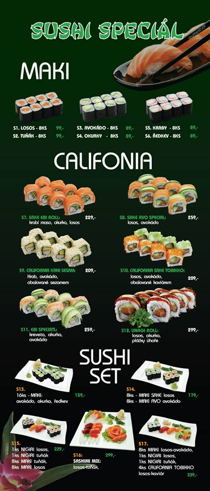
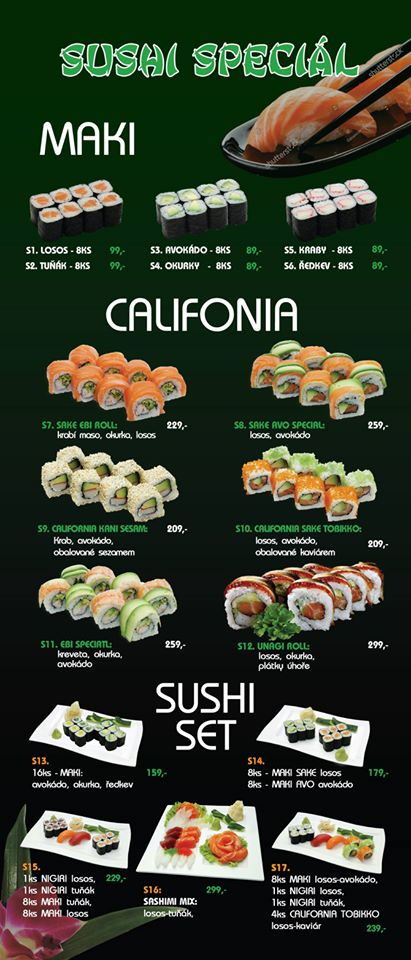

VIKENDOVE MENU 25.7. - 26.7. :
SOBOTA
Polevka fazolova s uzeninou (1)
A) 220 g Zeleninove rizoto s kurecim masem, sypane syrem, okurek (1, 7, 9) 95 Kc
B) 150 g Veprova kyta na houbach, houskovy knedlik (1, 3, 7) 100 Kc
C) 250 g Pecene marinovane koleno, stouchany brambor, okurek 110 Kc
D) 150 g Smazena veprova kapsa plnena sunkou a syrem, hranolky, tatarka (1, 3, 7) 120 Kc
E) 350 g Kachna pecena s jablky, zeli, houskovy knedlik (1, 3, 7) 140 Kc
NEDELE
Polevka slepici s testovinou (1, 3, 9)
A) 220 g Kure na zelenine, dusena bila ryze (7, 9) 95 Kc
B) 150 g Hamburska veprova kyta, houskovy knedlik (1, 3, 7) 100 Kc
C) 150 g Veprova licka na cervenem vine, bramborova kase (1, 7, 9) 110 Kc
D) 150 g Smazeny kureci rizek, brambor, okurek (1, 3, 7) 120 Kc
E) 350 g Kachna pecena s jablky, zeli, houskovy knedlik (1, 3, 7) 140 Kc
 
